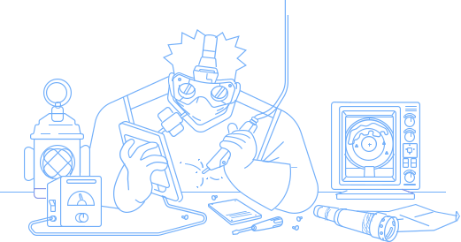
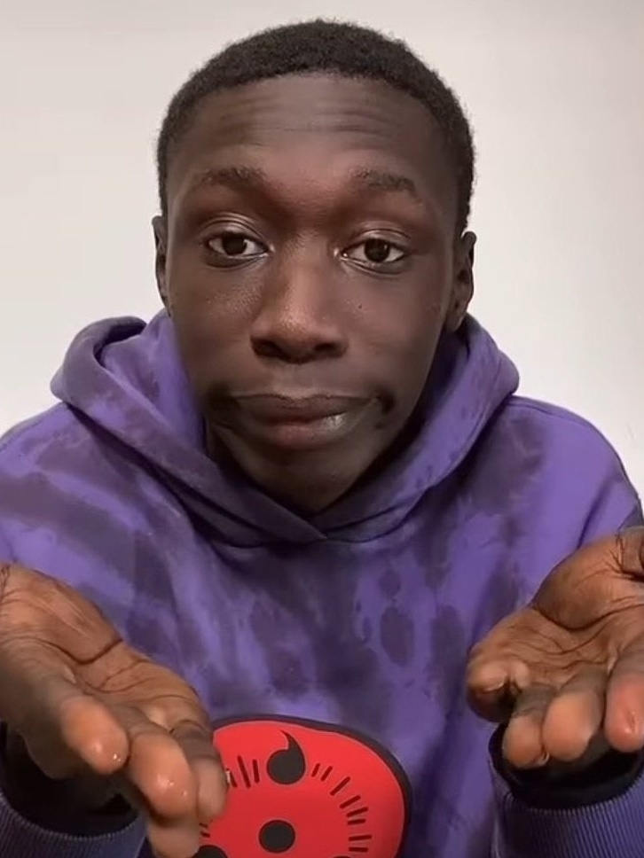

Curso Criador de Games 3D
Profissão Desenvolvedor de Jogos.
Aprenda a conceber e criar jogos nos motores mais
populares do mundo! Escolha um ou ambos de
uma
vez!
Todas as possibilidades para criar seus próprios jogos de
diferentes gêneros e
estilos do
zero: gamedesign e
desenvolvimento de jogos em um curso só.

Por onde começar com
Jogos
O mercado brasileiro de desenvolvimento de games cresce a cada ano, com estúdios de criação espalhados pelo país e mundo inteiros, e a demanda de pessoas capacitadas aumenta cada vez mais.
Desenvolver um jogo é uma tarefa coletiva e que envolve várias especializações. Muitas pessoas são necessárias para o processo de criação: artistas, músicos, escritores, programadores, entre diversas outras. Esta é uma área multidisciplinar, para quem gosta de estar sempre aprendendo e enfrentar desafios. Produzir um jogo é uma tarefa criativa e os cursos de desenvolvimento de jogos vão do básico ao avançado para você se tornar um desenvolvedor de Jogos usando inúmeras ferramentas simples.
O mercado consumidor permanece aquecido a muitos anos, e nos Estados
Unidos já superou o da
indústria
do
cinema em Hollywood. E isso tem se
refletido globalmente no crescimento das oportunidades de
carreira
no
segmeneto.
No Brasil, o nicho se proficionalizou nos ultimos anos. Entre os cargos
que estão em alta na
indústria
estão
o de desenvolvedor mobile e o
desenvolvedor web. Os salários médios podem
chegar aos:R$ 15 mil
.Isso mesmo,
aos 15 mil reias.
"Imagina esses 15 mil caindo todo mês em sua conta em!", "não seria uma boa?"
com Engine de jogos significa ser
um profissional muito procurado
no mercado de trabalho
Muitos dos melhores jogos são lançados nessas Game Engines, como por exemplo: Monument Vallery, Wasteland, Fall Guys: Ultimate knockout na Unity, Na Unreal - Gears of War, Final Fantasy, Tekken, Borderlands e muitos outros!
Neste curso você aprenderá como desenvolver seu própio game e não exige nenhum conhecimento
prevío,
apenas
um computador que rode o editor Unreal Engie 4. Neste caminho para desenvolver um game própio,
você
aprenderá
sobre programação, design de game, planejamento, prototipação, UML e muito mais.
Unreal Engine 4
Com esse curso da CyP Academy, você aprenderá do zero a como criar games a partir de setes famosos, entre eles Pac-Man, Super Mario e Candy Crush. O curso não exige conhecimento prévio em programação e recorre.
Tudo isso está apenas a um click
 CLICK AQUI!-
Até 10 vezes de
- R$ 58,17
- ou R$ 499,00 a vista